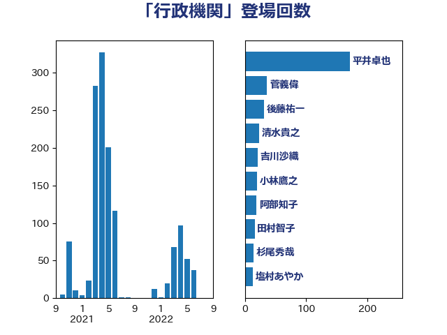

単語「行政機関」

| 平井卓也 | 自由民主党 | 171 回 |
| 菅義偉 | 自由民主党 | 36 回 |
| 後藤祐一 | 立憲民主党 | 31 回 |
| 清水貴之 | 日本維新の会 | 23 回 |
| 吉川沙織 | 立憲民主党 | 21 回 |
| 小林鷹之 | 自由民主党 | 20 回 |
| 阿部知子 | 立憲民主党 | 19 回 |
| 田村智子 | 日本共産党 | 16 回 |
| 杉尾秀哉 | 立憲民主党 | 14 回 |
| 塩村あやか | 立憲民主党 | 13 回 |
| 野田聖子 | 自由民主党 | 13 回 |
| 武田良太 | 自由民主党 | 12 回 |
| 上川陽子 | 自由民主党 | 11 回 |
| 森田俊和 | 立憲民主党 | 11 回 |
| 坂本哲志 | 自由民主党 | 10 回 |
| 加藤勝信 | 自由民主党 | 9 回 |
| 塩川鉄也 | 日本共産党 | 9 回 |
| 松野博一 | 自由民主党 | 9 回 |
| 柴田巧 | 日本維新の会 | 9 回 |
| 井上信治 | 自由民主党 | 8 回 |
| 小野寺五典 | 自由民主党 | 8 回 |
| 河野太郎 | 自由民主党 | 8 回 |
| 嘉田由紀子 | 無所属 | 7 回 |
| 階猛 | 立憲民主党 | 7 回 |
| 三浦靖 | 自由民主党 | 6 回 |
| 今井絵理子 | 自由民主党 | 6 回 |
| 城井崇 | 立憲民主党 | 6 回 |
| 堀場幸子 | 日本維新の会 | 6 回 |
| 後藤茂之 | 自由民主党 | 6 回 |
| 牧島かれん | 自由民主党 | 6 回 |
| 西銘恒三郎 | 自由民主党 | 6 回 |
| 高良鉄美 | 無所属 | 6 回 |
| 上田清司 | 国民民主党 | 5 回 |
| 田村憲久 | 自由民主党 | 5 回 |
| 芳賀道也 | 国民民主党 | 5 回 |
| 中谷一馬 | 立憲民主党 | 4 回 |
| 井上哲士 | 日本共産党 | 4 回 |
| 堀井巌 | 自由民主党 | 4 回 |
| 山添拓 | 日本共産党 | 4 回 |
| 岸田文雄 | 自由民主党 | 4 回 |
| 平沢勝栄 | 自由民主党 | 4 回 |
| 斉藤鉄夫 | 公明党 | 4 回 |
| 柚木道義 | 立憲民主党 | 4 回 |
| 森屋宏 | 自由民主党 | 4 回 |
| 若宮健嗣 | 自由民主党 | 4 回 |
| こやり隆史 | 自由民主党 | 3 回 |
| 伊藤岳 | 日本共産党 | 3 回 |
| 佐藤啓 | 自由民主党 | 3 回 |
| 古川禎久 | 自由民主党 | 3 回 |
| 山口壯 | 自由民主党 | 3 回 |
| 掘井健智 | 日本維新の会 | 3 回 |
| 森山浩行 | 立憲民主党 | 3 回 |
| 横沢高徳 | 立憲民主党 | 3 回 |
| 熊田裕通 | 自由民主党 | 3 回 |
| 田村まみ | 国民民主党 | 3 回 |
| 野上浩太郎 | 自由民主党 | 3 回 |
| 野田国義 | 立憲民主党 | 3 回 |
| 音喜多駿 | 日本維新の会 | 3 回 |
| 古屋範子 | 公明党 | 2 回 |
| 和田義明 | 自由民主党 | 2 回 |
| 大口善徳 | 公明党 | 2 回 |
| 大塚拓 | 自由民主党 | 2 回 |
| 小里泰弘 | 自由民主党 | 2 回 |
| 山崎誠 | 立憲民主党 | 2 回 |
| 山本博司 | 公明党 | 2 回 |
| 岡本あき子 | 立憲民主党 | 2 回 |
| 岸真紀子 | 立憲民主党 | 2 回 |
| 川田龍平 | 立憲民主党 | 2 回 |
| 平口洋 | 自由民主党 | 2 回 |
| 徳永エリ | 立憲民主党 | 2 回 |
| 打越さく良 | 立憲民主党 | 2 回 |
| 木原誠二 | 自由民主党 | 2 回 |
| 本村伸子 | 日本共産党 | 2 回 |
| 林芳正 | 自由民主党 | 2 回 |
| 浅野哲 | 国民民主党 | 2 回 |
| 浜田聡 | NHK党 | 2 回 |
| 田所嘉徳 | 自由民主党 | 2 回 |
| 石川博崇 | 公明党 | 2 回 |
| 福山哲郎 | 立憲民主党 | 2 回 |
| 蓮舫 | 立憲民主党 | 2 回 |
| 藤井比早之 | 自由民主党 | 2 回 |
| 角田秀穂 | 公明党 | 2 回 |
| 道下大樹 | 立憲民主党 | 2 回 |
| 長坂康正 | 自由民主党 | 2 回 |
| 長浜博行 | 無所属 | 2 回 |
| 高橋光男 | 公明党 | 2 回 |
| おおつき紅葉 | 立憲民主党 | 1 回 |
| 三ッ林裕巳 | 自由民主党 | 1 回 |
| 中山展宏 | 自由民主党 | 1 回 |
| 中島克仁 | 立憲民主党 | 1 回 |
| 串田誠一 | 日本維新の会 | 1 回 |
| 伊藤孝恵 | 国民民主党 | 1 回 |
| 伊藤渉 | 公明党 | 1 回 |
| 佐々木紀 | 自由民主党 | 1 回 |
| 佐藤英道 | 公明党 | 1 回 |
| 務台俊介 | 自由民主党 | 1 回 |
| 勝目康 | 自由民主党 | 1 回 |
| 北神圭朗 | 無所属 | 1 回 |
| 古川俊治 | 自由民主党 | 1 回 |
| 吉川元 | 立憲民主党 | 1 回 |
| 吉田宣弘 | 公明党 | 1 回 |
| 吉田忠智 | 立憲民主党 | 1 回 |
| 吉良よし子 | 日本共産党 | 1 回 |
| 和田政宗 | 自由民主党 | 1 回 |
| 和田有一朗 | 日本維新の会 | 1 回 |
| 大河原まさこ | 立憲民主党 | 1 回 |
| 大西健介 | 立憲民主党 | 1 回 |
| 安江伸夫 | 公明党 | 1 回 |
| 安達澄 | 無所属 | 1 回 |
| 小林史明 | 自由民主党 | 1 回 |
| 小沼巧 | 立憲民主党 | 1 回 |
| 尾身朝子 | 自由民主党 | 1 回 |
| 岡田直樹 | 自由民主党 | 1 回 |
| 島村大 | 自由民主党 | 1 回 |
| 平将明 | 自由民主党 | 1 回 |
| 新谷正義 | 自由民主党 | 1 回 |
| 有村治子 | 自由民主党 | 1 回 |
| 杉久武 | 公明党 | 1 回 |
| 松山政司 | 自由民主党 | 1 回 |
| 松沢成文 | 日本維新の会 | 1 回 |
| 枝野幸男 | 立憲民主党 | 1 回 |
| 梅村聡 | 日本維新の会 | 1 回 |
| 江田憲司 | 立憲民主党 | 1 回 |
| 浅田均 | 日本維新の会 | 1 回 |
| 渡辺周 | 立憲民主党 | 1 回 |
| 熊谷裕人 | 立憲民主党 | 1 回 |
| 片山大介 | 日本維新の会 | 1 回 |
| 田中健 | 国民民主党 | 1 回 |
| 田名部匡代 | 立憲民主党 | 1 回 |
| 田村貴昭 | 日本共産党 | 1 回 |
| 石井正弘 | 自由民主党 | 1 回 |
| 神谷裕 | 立憲民主党 | 1 回 |
| 福島みずほ | 社会民主党 | 1 回 |
| 福島伸享 | 無所属 | 1 回 |
| 福重隆浩 | 公明党 | 1 回 |
| 篠原豪 | 立憲民主党 | 1 回 |
| 紙智子 | 日本共産党 | 1 回 |
| 細田健一 | 自由民主党 | 1 回 |
| 荒井優 | 立憲民主党 | 1 回 |
| 葉梨康弘 | 自由民主党 | 1 回 |
| 西岡秀子 | 国民民主党 | 1 回 |
| 西村智奈美 | 立憲民主党 | 1 回 |
| 谷合正明 | 公明党 | 1 回 |
| 赤池誠章 | 自由民主党 | 1 回 |
| 赤羽一嘉 | 公明党 | 1 回 |
| 足立敏之 | 自由民主党 | 1 回 |
| 里見隆治 | 公明党 | 1 回 |
| 重徳和彦 | 立憲民主党 | 1 回 |
| 阿部司 | 日本維新の会 | 1 回 |
| 阿部弘樹 | 日本維新の会 | 1 回 |
| 馬場伸幸 | 日本維新の会 | 1 回 |
| 高市早苗 | 自由民主党 | 1 回 |
| 高木啓 | 自由民主党 | 1 回 |
| 高橋はるみ | 自由民主党 | 1 回 |
| 麻生太郎 | 自由民主党 | 1 回 |